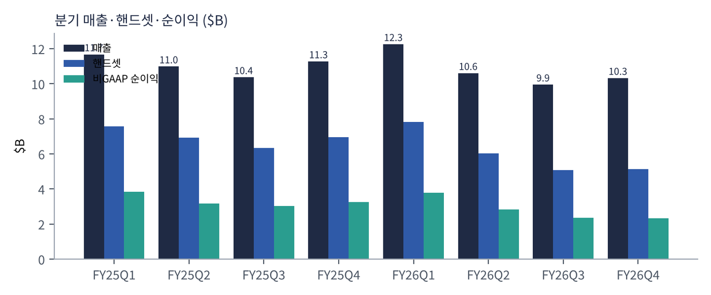
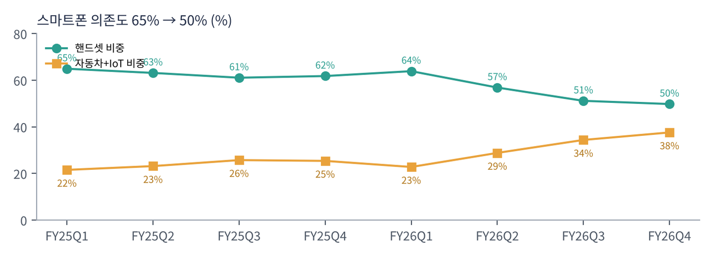
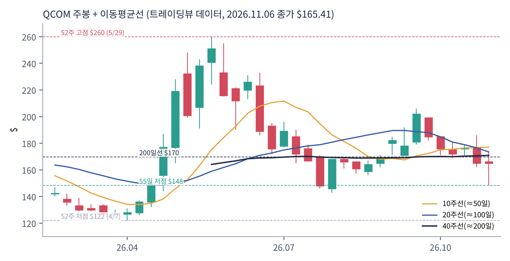
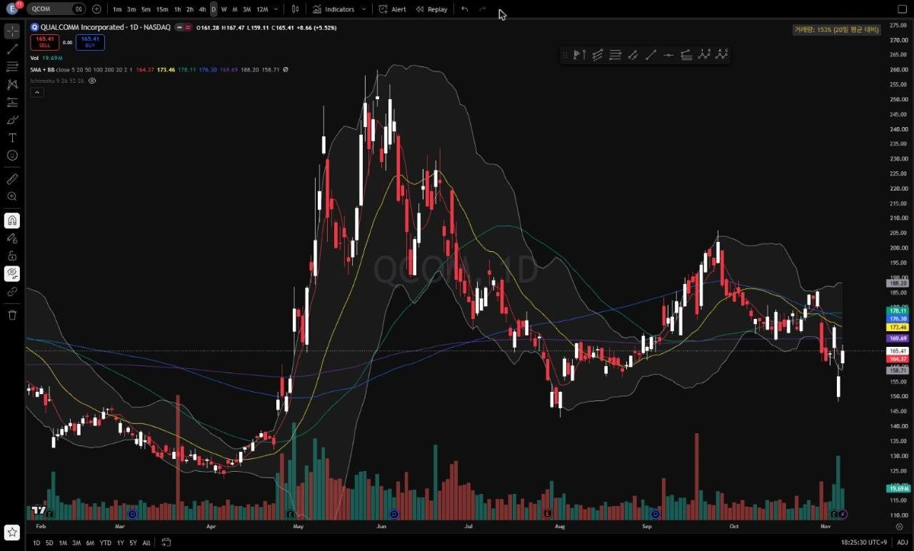
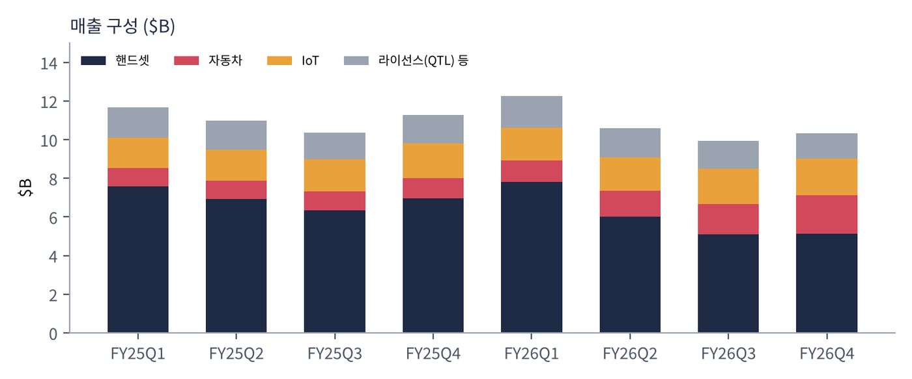

퀄컴은 스마트폰용 프로세서(스냅드래곤)와 모뎀을 만드는 세계 최대 팹리스이자, 3G·4G·5G 통신 표준 특허로 휴대폰 1대마다 로열티를 받는 회사다. 두 사업이 서로를 받친다. 특허 수입(QTL)은 매출의 13% 정도지만 이익률이 70%를 넘는다. 2021년 이후 '다각화'를 내세워 자동차(디지털 콕핏·ADAS), PC(스냅드래곤 X), XR·IoT, 그리고 2025년부터 AI 데이터센터로 영역을 넓히고 있다.
| 항목 | 내용 |
|---|---|
| 종목 | QUALCOMM Inc. (QCOM) · 반도체(팹리스) · 1985년 설립 · 본사 캘리포니아주 샌디에이고 |
| 경영진 | 크리스티아노 아몬 CEO / 아카시 팔키왈라 CFO |
| 시가총액 | 약 $177B · PER 12.8배 (11/6 종가 기준) |
| 최근 분기(FY26 4Q) | 매출 $10.3B, 반도체(QCT) $9.0B(-8%), 라이선스(QTL) 약 $1.3B |
| 주요 고객 | 삼성·샤오미·오포·비보 등 안드로이드 제조사, 애플(모뎀 → 2026년부터 자체 모뎀 전환 중), 자동차 업체 |
| 분기(회계) | 매출 | 핸드셋 | 자동차 | IoT | 비GAAP 순이익 | GAAP 순이익 | 특이 사항 |
|---|---|---|---|---|---|---|---|
| FY25 1Q | $11.7B | $7.6B | $0.96B | $1.55B | $3.8B | $3.2B | 연말 성수기 |
| FY25 2Q | $11.0B | $6.9B | $0.96B | $1.58B | $3.2B | $2.8B | |
| FY25 3Q | $10.4B | $6.3B | $0.98B | $1.68B | $3.0B | $2.7B | |
| FY25 4Q | $11.3B | $7.0B | $1.05B | $1.81B | $3.3B | -$3.1B | 일회성 세금 비용 |
| FY26 1Q | $12.3B | $7.8B | $1.10B | $1.69B | $3.8B | $3.0B | 매출 정점 |
| FY26 2Q | $10.6B | $6.0B | $1.33B | $1.73B | $2.8B | $7.4B | 세금 환입 이익 |
| FY26 3Q | $9.9B | $5.1B | $1.59B | $1.83B | $2.4B | $2.0B | 핸드셋 급감 |
| FY26 4Q | $10.3B | $5.1B | $1.99B | $1.89B | $2.3B | $1.3B | 자동차 첫 $2B |

매출보다 이익이 더 빨리 줄고 있다. FY26 4분기 매출은 전년보다 8% 줄었는데 비GAAP 순이익은 28% 줄었다. 고마진 핸드셋 칩 매출이 $1.8B 빠지고, 그 자리를 아직 이익률이 낮은 자동차 칩이 채웠기 때문이다. 원가 상승분(웨이퍼·테스트·패키징·메모리)도 아직 판매가에 다 넘기지 못했다.
GAAP 순이익은 세금 때문에 흔들린다. FY25 4분기 -$3.1B는 일회성 세금 비용, FY26 2분기 $7.4B는 세금 환입이 반영된 결과로 본업과 무관하다. 그래서 이 보고서는 비GAAP 순이익을 본업 지표로 썼다.

다각화는 숫자로 증명되고 있다. 핸드셋 비중이 65%에서 50%로 내려왔고, 자동차+IoT 비중은 22%에서 38%로 올랐다. 다만 이 변화의 절반은 '자동차가 커서'가 아니라 '핸드셋이 줄어서'다. 애플 모뎀 매출이 단계적으로 사라지는 것이 큰 원인이다.
| 항목 | 가이던스 | 전년 동기 |
|---|---|---|
| 매출 | $10.4~11.2B | $12.3B |
| 반도체(QCT) / 라이선스(QTL) | $9.0~9.6B / $1.3~1.5B | |
| 비GAAP EPS | $2.15~2.35 | 약 $3.50 |
| GAAP EPS | $1.03~1.23 |
연말 성수기 분기인데도 전년보다 매출 -12%, EPS -35% 수준이다. 회사는 원가 상승에 맞춰 제품 가격을 올리고 있고, 그 효과가 반도체 매출총이익률에 온전히 반영되는 시점을 FY27 하반기로 제시했다.
트레이딩뷰 QCOM 일봉 300개(2025.8 ~ 2026.11.6)와 주봉으로 계산했다. 결론부터 말하면 5월의 AI 급등($122 → $260)을 거의 다 반납하고 1년 전 가격대로 돌아왔다. 장기 이동평균선들이 $164~178 좁은 구간에 모여 있어 방향을 정하는 자리다.


위: 주봉 재구성 차트. 아래: 트레이딩뷰 일봉 캡처(작도 없이 이동평균선·볼린저밴드만 표시).
| 이동평균 | 값 | 종가 대비 | 해석 |
|---|---|---|---|
| 5일선 | $164.4 | +0.6% | 단기 반등으로 회복 |
| 20일선 | $173.5 | -4.6% | 1차 저항 |
| 50일선 | $178.1 | -7.1% | 9월 반등 고점권 |
| 100일선 | $176.3 | -6.2% | 50일선과 겹침 |
| 200일선 | $169.7 | -2.5% | 바로 위 — 회복 여부가 관건 |
배열은 50일 > 100일 > 20일 > 200일 > 주가 ≈ 5일이다. 주봉 흐름: 2025년 하반기 $160~178 박스 → 2026년 1~4월 메모리 원가·애플 모뎀 우려로 $176 → $122(-31%) → 4월 말 실적과 AI 데이터센터 기대로 3주 만에 $128 → $238, 5/29 $260 고점 → 6~8월 $157까지 되돌림 → 9월 아마존 협력 기대로 $206 → 10월 말 실적 후 다시 $148까지 밀린 뒤 $165 마감.
| 규칙 | 기준 | 현재 값 | 신호 |
|---|---|---|---|
| 장기 추세 필터 | 종가 vs 200일선 | $165.4 < $169.7 | 매도 |
| 중장기 교차 | 50일선 vs 200일선 | $178.1 > $169.7 | 매수 |
| 단기 교차 | 20일선 vs 50일선 | $173.5 < $178.1 | 매도 |
| 돈키언 채널 | 55일 고가 $205.9 / 저가 $148.3 | 중간값 $177 아래 | 매도 |
| 1개월 모멘텀 | 21거래일 수익률 | -6.0% (기준 $176.0) | 매도 |
| 3개월 모멘텀 | 63거래일 수익률 | +2.0% (기준 $162.2) | 매수 |
| 6개월 모멘텀 | 126거래일 수익률 | -24.5% (기준 $219.1) | 매도 |
| 12개월 모멘텀 | 252거래일 수익률 | -8.0% (기준 $179.7) | 매도 |
| 종합 (8개 평균) | -0.50 | 매도 | |
해석: 숫자는 인텔과 같은 -0.50이지만 내용은 다르다. 인텔은 '폭락 후 과매도'이고, 퀄컴은 '급등분을 반납하고 원위치'다. 200일선과의 거리가 -2.5%뿐이라 $170만 회복하면 추세 필터가 매수로 바뀌어 점수가 0으로 올라간다. 6개월 모멘텀 기준가가 5~6월 고점권($190~240)이라 12월까지 계속 매도이고, 2027년 1월부터는 기준가가 $130~140대로 내려가 매수로 바뀌기 쉽다. 14일 ATR $9.1(5.5%).
| 가격 | 무엇이 바뀌나 | 의미 |
|---|---|---|
| $170 | 200일선 회복 | 장기 추세 필터 매수 — 점수 0 |
| $174 ~ 178 | 20일선·50일선·돈키언 중간값 | 단기 교차·채널 매수 — 점수 +0.5 가능 |
| $162 | 3개월 모멘텀 기준 | 이탈 시 마지막 매수 신호도 꺼짐 |
| $148 이탈 | 55일 저점 붕괴 | 4월 박스($122~131) 방향 |
| 구분 | 가격대 | 근거 |
|---|---|---|
| 저항 2 | $200 ~ 206 | 9월 고점, 55일 고가 |
| 저항 1 | $170 ~ 178 | 200·20·50·100일선 밀집 |
| 지지 1 | $148 ~ 157 | 11/3 저점, 8월 저점 |
| 지지 2 | $122 ~ 131 | 2026년 3~4월 바닥 |
기본 판단: 싸지만, 촉매가 FY27 하반기에 있다. PER 12.8배는 핸드셋 둔화를 상당 부분 반영한 가격이다. 그러나 FY27 1분기 EPS가 전년보다 35% 낮고, 가격 인상 효과와 데이터센터 매출은 하반기에 나온다. 따라서 '바닥권 분할 매수, 이동평균선 밀집 구간 돌파 확인 후 추가'가 합리적이다.
| 가격대 | 시나리오 | 대응 |
|---|---|---|
| $205 이상 | 추세 재개 | 2차 익절 후 잔여 추종 |
| $170 ~ 178 | 이동평균선 밀집 | 돌파 시 추가 매수, 실패 시 1차 익절 |
| $150 ~ 165 | 박스 하단 | 분할 매수 70% |
| $143 이하 종가 | 지지 붕괴 | 손절 |
| $131 이하 | 연저점 시험 | 관망 |

| 사업 | 돈을 버는 방식 | FY26 | 성장 |
|---|---|---|---|
| 핸드셋 (QCT) | 스냅드래곤 AP와 5G 모뎀을 스마트폰 제조사에 판매 | $24.1B | -13% |
| 자동차 (QCT) | 디지털 콕핏, 커넥티비티, ADAS용 '스냅드래곤 디지털 섀시'. 수주 후 3~4년 뒤 매출이 나는 구조 | $6.0B | +52% |
| IoT (QCT) | PC(스냅드래곤 X), XR 안경, 산업용·네트워크 칩 | $7.1B | +8% |
| 라이선스 (QTL) | 3G~5G 표준 특허 로열티(기기 가격 비례). 애플·화웨이·트랜션과 장기 재계약 | 약 $5.5B | — |
| 데이터센터 | AI 추론용 가속기·CPU(AI200/AI250 계열), 아마존과 다세대 협력. FY27 목표 $5B | 초기 | — |
QTL 연간 매출은 분기 약 $1.3~1.5B 기준 추정치다.
퀄컴의 이익은 여전히 스마트폰에서 나온다. 핸드셋 칩과 특허 로열티가 영업이익의 대부분을 만든다. 자동차는 빠르게 크지만 연구개발비가 많이 들어가는 단계다. 그래서 핸드셋이 13% 줄면 이익은 그보다 훨씬 크게 줄어든다.
아몬 CEO가 이번 발표에서 강조한 단어는 '핸드셋 외 매출의 변곡점'이다. FY27을 데이터센터를 포함한 핸드셋 외 매출이 본격적으로 꺾여 오르는 해로 정의하고, 핸드셋 외 매출 +60% 이상, 데이터센터 매출 $5B 목표를 다시 확인했다.
| 축 | 내용 |
|---|---|
| 엣지 AI | 스마트폰·PC·자동차·안경 등 '기기 안에서 도는 AI'의 표준 칩. 저전력 NPU가 강점 |
| 자동차 | 차량을 '바퀴 달린 컴퓨터'로 만드는 중앙 컴퓨터. FY26 첫 $2B 분기 |
| 데이터센터 | 저전력 추론 가속기로 엔비디아가 약한 '전력 대비 성능' 시장 공략. 아마존과 다세대 협력 |
| 특허 | 통신 표준 특허가 모든 영역의 현금 기반. 주요 고객과 장기 재계약으로 불확실성 해소 |
| 항목 | 회사의 말 (FY26 4Q) | 읽는 법 |
|---|---|---|
| 실적 | 4분기 비GAAP 매출은 가이던스 상단, 자동차+IoT 합산 +36% | 다각화 사업은 강함 |
| FY27 | "데이터센터 램프를 포함한 핸드셋 외 매출 변곡의 시작", 핸드셋 외 매출 +60% 이상, 데이터센터 $5B 목표 재확인 | 가장 중요한 약속 |
| 원가 | 웨이퍼·조립·테스트·패키징·메모리 전반의 원가 상승. 제품 가격 인상 중이며 QCT 매출총이익률 효과는 FY27 하반기에 온전히 반영 | 상반기 이익률 압박 |
| 계약 | 애플·화웨이·트랜션 장기 라이선스 갱신, 아마존과 AI 데이터센터 다세대 제품 협력 | 현금 기반 안정 |
퀄컴 코멘트의 핵심은 '원가 인플레이션'이다. 메모리 가격 급등은 퀄컴에 이중으로 불리하다. 칩 패키지에 들어가는 메모리 원가가 오르고, 동시에 스마트폰 가격이 올라 판매량이 준다. 마이크론·SK하이닉스의 호황이 퀄컴에는 역풍인 구조다.
애플 모뎀 매출의 단계적 소멸과 안드로이드 고가폰 수요 둔화가 겹쳤다. 삼성 갤럭시 플래그십 점유율이 다음 변수다.
처음 분기 $2B 돌파. 2022~2023년 수주가 매출로 바뀌는 시기다. 성장률로는 반도체 업계 최상위권이다.
PC용 스냅드래곤 X와 메타 레이밴 등 스마트 안경이 성장축이다. 성장률은 완만하다.
FY26 영업현금흐름 $11.1B(전년 $14.0B). 이익 감소에도 배당·자사주 매입 여력은 충분하다.
| 경쟁/리스크 | 내용 | 강도 |
|---|---|---|
| 애플 이탈 | 자체 모뎀 전환으로 애플향 칩 매출이 단계적으로 사라짐(라이선스는 재계약) | 높음 |
| 원가 인플레이션 | 메모리·웨이퍼·패키징 원가 상승, 가격 전가에 시차 | 높음 |
| 미디어텍 | 안드로이드 AP 점유율 경쟁, 자동차·데이터센터에도 진출 | 중간 |
| 데이터센터 실행 | $5B 목표가 아직 실적으로 확인되지 않음. 엔비디아·AMD·브로드컴 ASIC과 경쟁 | 중간~높음 |
| 중국 | 중국 스마트폰 제조사 매출 비중이 커서 미·중 규제 영향 | 참고 |
FY27 상반기는 원가 압박과 핸드셋 약세로 이익이 줄어드는 구간이다. 주가는 이미 이를 반영해 PER 12배대다. 반등의 촉매는 데이터센터 고객 확정과 가격 인상 효과의 조기 확인이다.
자동차가 연 $6B → $10B, 데이터센터가 $5B를 실제로 달성하면 핸드셋 의존도가 40% 아래로 내려가며 '스마트폰 회사' 할인이 사라질 수 있다. 실패하면 성장 없는 배당주로 평가될 것이다.